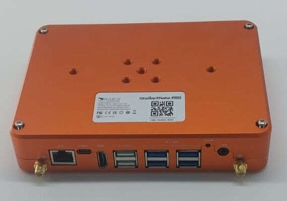
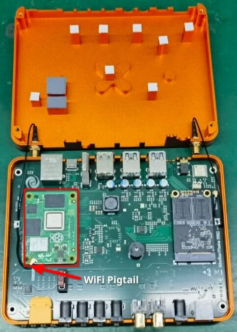

Replace Computing Module
Introduction
This guide outlines the steps to replace a faulty Raspberry Pi CM4 on your StellarMate Pro. It is crucial to handle electronic components with care to prevent damage. Always wear an anti-static wrist strap to protect sensitive components from electrostatic discharge (ESD).
Required Tools
- Phillips head screwdriver (M2.5 and M3 sizes)
- Anti-static ESD wrist strap
Procedure
- Power Off: Ensure the StellarMate Pro is completely powered off and disconnected from any power source.

2. Remove Antennas: Carefully detach the WiFi and GPS antennas from the device.
3. Open the Case: Unscrew the four M3 screws at the back of the StellarMate Pro case. Gently lift the lid, taking care not to damage the internal antenna cables.

4. Disconnect CM4:
- Disconnect the pigtail cable from the CM4.
- Unscrew the four M2.5 screws securing the CM4.
- Carefully lift the CM4 from the onboard sockets.
5. Install New CM4:
- Align the new CM4 with the sockets.
- Gently press the left side of the CM4 into place until you hear a distinct clicking noise.
- Then, gently press the right side of the CM4 into place until you hear a second clicking noise. Ensure the CM4 is fully seated.
6. Reconnect Pigtail Cable:
- Connect the pigtail cable to the CM4. Ensure a secure connection.
- Secure the pigtail cable to the metal cable clip using the provided fastener.
7. Close the Case:
- Lower the lid and secure it with the four M3 screws.
- Reattach the WiFi and GPS antennas.
Important notes
- Handle the CM4 and other components with care to avoid damage.
- Use the provided screws and avoid over tightening them.
- If you encounter difficulties, consult the StellarMate Pro support resources or seek professional assistance.